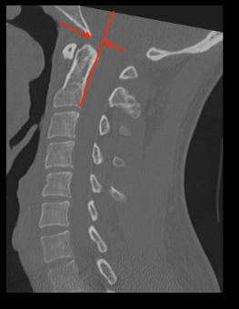

Adapted from: Knipe H, Atlantodental interval. Radiopaedia.org (Accessed on 17 Dec 2025). https://doi.org/10.53347/rID-38418
1) Description of Measurement
BAI assesses anterior or posterior translation between the skull base and the cervical spine by relating the basion to the axis (C2). It complements BDI by evaluating horizontal displacement rather than vertical separation.x
2) Instructions to Measure
3) Normal vs. Pathologic Ranges
4) Important References
Bono CM, Vaccaro AR, Fehlings M, et al. Measurement techniques for upper cervical spine injuries: consensus statement of the spine trauma study group. Spine. 2007;32:593-600.
Daffner RH, Harris JH. Cervical Spine Injuries. 5th ed. Philadelphia, PA: Lippincott Williams & Wilkins; 2013:139–260
Harris JH Jr, Carson GC, Wagner LK. Radiologic diagnosis of traumatic occipitovertebral dissociation: 1. Normal occipitovertebral relationships on lateral radiographs of supine subjects. AJR Am J Roentgenol 1994;162(04):881–886
Harris JH Jr, Carson GC, Wagner LK, Kerr N. Radiologic diagnosis of traumatic occipitovertebral dissociation: 2. Comparison of three methods of detecting occipitovertebral relationships on lateral radiographs of supine subjects. AJR Am J Roentgenol 1994; 162(04):887–892
Rojas CA, Bertozzi JC, Martinez CR, Whitlow J. Reassessment of the craniocervical junction: normal values on CT. AJNR Am J Neuroradiol. 2007;28(9):1819-1823. doi:10.3174/ajnr.A0660
Kasliwal MK, Fontes RB, Traynelis VC. Occipitocervical dissociation-incidence, evaluation, and treatment. Curr Rev Musculoskelet Med. 2016;9(3):247-254. doi:10.1007/s12178-016-9347-6
5) Other info....
Unlike the BDI, the BAI has poor reproducibility on CT scans due to variability in basion shape and difficulty in consistently drawing the PAL on axial-reformatted sagittal images. It is still used but often secondary to the BDI and CCI in modern CT trauma protocols.